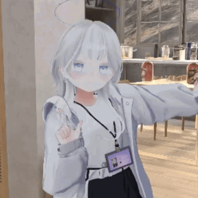

coffin299 (ごみぃ)
AIプログラマー & 3DCGアーティスト
About Me
日々のゲーム体験と日常から生まれる「コレがあったらいいな」のアイデアをLLMを駆使して形にするのが得意です。 プログラミングと3DCGの両方に興味を持ち、新しい技術を学ぶことを楽しんでいます。
Skills
プログラミング
3DCG
AI・機械学習
Interests & Hobbies
ゲーム
様々なジャンルのゲームをプレイし、3DCG制作のインスピレーションを得ています。
音楽
音楽を聴くことが好きで、Discord Botでの音楽再生システムも開発しています。
アイデア実現
日常の「あったらいいな」をAI技術を使って実際に形にすることが趣味です。